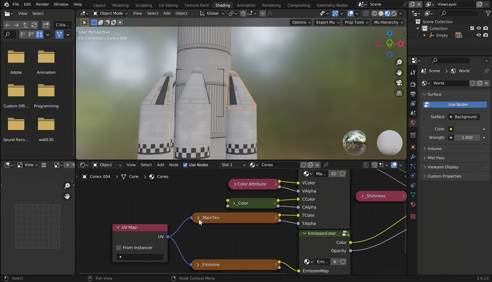
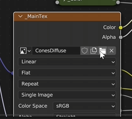
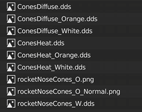
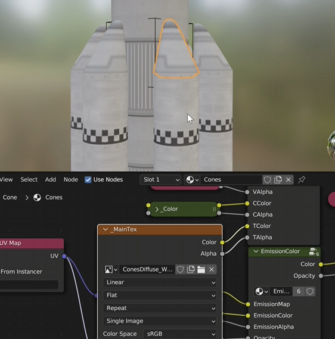
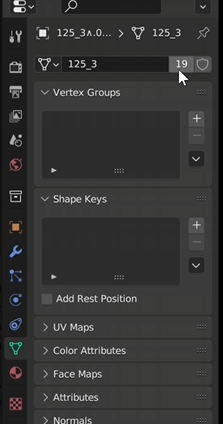
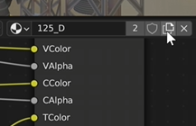

Step 3 - Changing and Editing Part Textures
Overview
Sometimes when a craft is imported into Blender, certain parts may use textures that you do not want. For example, booster cones or fuel tanks might import with a color or material different from what you expected.
In this section, you will learn how to open the shading editor, change the texture used by a part, and create unique textures for individual pieces.
Opening the Shading Workspace
Access the Texture Controls
To begin editing textures, switch to Blender’s Shading workspace.
- Click the Shading tab at the top of Blender.
- elect the part of the ship you want to modify.

Changing a Part’s Texture
Selecting a Different Texture
Once you have selected a part, locate the Image Texture node in the shader editor. You should see a texture labeled MainTex. This is the main texture used by the object.
To change it:
- Click the Image Texture node labeled “MainTex.”
- Click the folder icon next to the texture name.

This will open a list of available textures for that part. For example, a cone may have multiple texture options such as:
- Regular
- Orange
- White

Adjusting Normal Maps
Matching the Texture’s Surface Detail
Some parts also include bump or normal maps that control how surface details appear in lighting. If you change the main texture, you should also update the normal map to match it.
For example:
- If you selected the white texture, choose the white normal map as well.

Changing Textures on Individual Parts
Editing One Part Without Affecting Other
Many imported ship parts share the same material. Because of this, changing the texture on one object may also change it on every identical part. If you want to modify only one object, you will need to create a separate material.
To do this:
- Open the Material Properties panel.
- Locate the material name and the number next to it.
- Click the number button to make the material single-user.

Next:
- Click the Duplicate Texture button in the shader editor.
- Change the texture as needed.

Result
Step 1:
After adjusting the textures, your craft parts should now display the colors and materials you want.
You can now:
- Customize individual ship components
- Match textures across parts
- Prepare the craft for lighting and rendering